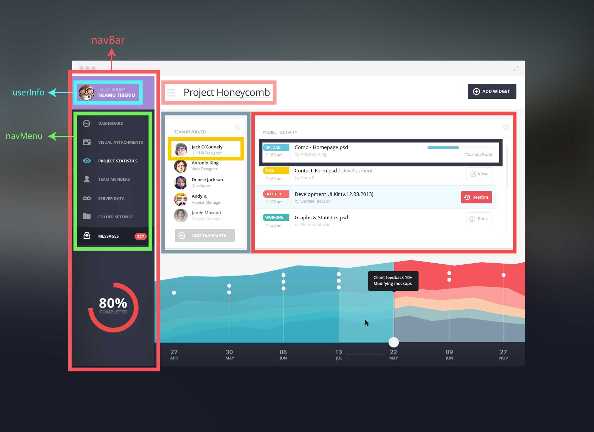
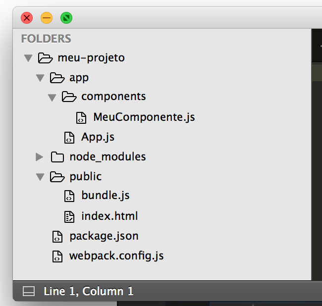
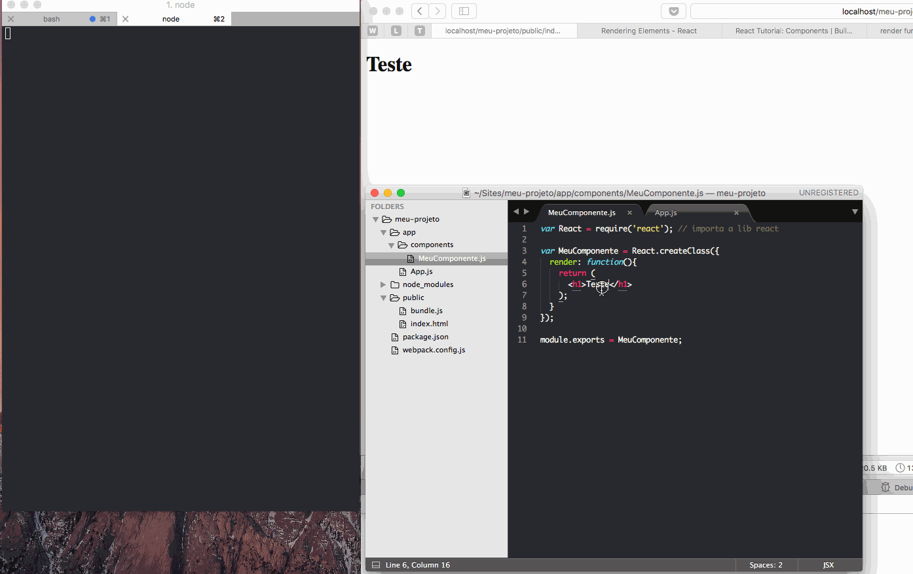

Hello World com React desde o rascunho
Há muito tempo eu queria fazer um Hello World com React, mas nunca tinha tempo por que eu mudei de área fazem uns 3 anos, ficando mais na parte de gestão de produtos e times, deixando totalmente o desenvolvimento e a escrita de código. Por isso, senti na pele o que os iniciantes sentem quando precisam fazer um simples Hello World de uma tecnologia nova. São tantos artigos falando coisas diferentes, usando setups diferentes, na sua maioria complexos e que não explicam as coisas com simplicidade.
É por isso que eu tenho procurado conteúdo fácil para poder investir um tempo e aprender pelo menos o básico e o início do React. Eu li uma série de fontes pela internet, que você pode conferir no final do artigo, além de um curso grátis, muito, mas muito bem feito pelo Matheus Lima no JSCasts. Esse é um artigo baseado em todas essas fontes. Tentei abstrair toda as inutilidades que alguém não precisa aprender logo que está iniciando. Espero que tenha cumprido com o objetivo.
Conceitos do React e Introdução
O React foi pensado em como podemos componentizar nossos elementos, de forma que eles sejam independentes, mas reutilizáveis. Pensa em um componente como se fosse um widget ou um módulo. Se ficar mais fácil, pense que um componente é um pedaço de HTML, CSS, JS e os poucos dados que irão popular esse pedaço do layout.
Sem entrar na polêmica de modularização e componentização no JS, atualmente, nós organizamos na pior das hipóteses - e mais comum também -, os componentes como partes separadas de códigos. Você pega um pedaço de código HTML, coloca numa determinada página, que é formatada com CSS e manipulada com JS. O código que estrutura, formata e manipula seu componente está separado nesses três arquivos de HTML, CSS e JS. No React, o conceito é mais simples, onde unificamos o HTML dentro do JS, o que no React chamamos de JSX.

Perceba que na imagem acima - peguei o layout de exemplo daqui - cada retângulo colorido tem um componente pai, com seus componentes internos, que chamamos de componentes filhos. Podemos, então, criar um componente chamado navBar com um componente filho chamado userInfo, que conterá as informações do usuário. O nosso componente pai, guarda estado dos dados que usaremos nos componentes filhos. O pai compartilha os dados com os filhos por meio de atributos. Nesse exemplo, a navBar iria compartilhar as informações do usuário logado para o componente filho userInfo. Esta hierarquia de pai e filho faz com que o gerenciamento de dados seja simples, por que nós sabemos exatamente onde os dados estarão, não causando confusão usando esses dados erroneamente em outros lugares.
O JSX é como o ReactJS cria os componentes em JavaScript. Você vai escrever HTML (quase) normal dentro do próprio JS, o ReactJS, por sua vez, vai se encarregar de traduzir esse HTML para JavaScript, que vai renderizar um elemento no DOM. Se você tem o código <h1>Titulo</h1>, o JSX vai se transformar em React.createElement('h1', null, 'Titulo'); antes de ser executado pelo browser. Escrever com esse HTML do React (JSX), facilita a leitura e você diminui a curva de aprendizado.
Você já deve ter ouvido sobre o Virtual DOM. O Virtual DOM é a árvore de componentes que o ReactJS gera para que o browser renderize na tela. Pra melhorar a performance, o ReactJS gera todo o HTML (baseado em JSX e transformado em JavaScript) na memória antes de renderizar para o usuário. Além disso, ele fica vigiando esse Virtual DOM procurando por alterações. Quando algo é alterado, ele muda apenas o que foi alterado e não todo o HTML.
Setup do projeto
Como todo o projeto, necessitamos fazer um setup inicial, preparando o ambiente e iniciando parte do código. Nesse setup vamos começar criando o projeto com NPM, depois vamos criar arquivos de configuração do Webpack e também o arquivo index.html, que é onde vamos mostrar nossa App.
NPM
Como gerenciador de pacotes, vamos usar o NPM. Por isso, abra seu terminal predileto e veja os comandos abaixo. Esses comandos vão criar uma pasta para o projeto (eu já estou na minha pasta publica, onde coloco meus projetos para serem acessados via localhost), depois eu inicio o NPM e aí instalo dois pacotes iniciais react e react-dom:
1 2 3 | $ mkdir meu-projeto $ npm install --save react react-dom $ npm init # aperte enter em tudo que vier |
Agora, dentro da pasta meu-projeto deve haver um package.json que o NPM instalou. Vamos instalar agora o Webpack. O Webpack é o que vai juntar todos os nossos módulos, compilar nosso CSS e etc.
1 2 | $ cd meu-projeto $ npm install --save-dev webpack |
Nós vamos instalar o webpack apenas em desenvolvimento, por que, obviamente vamos usar o código que ele gerar em produção. Mas vamos aproveitar para instalá-lo também globalmente, por que vamos precisar rodar o comando webpack para gerar nosso bundle:
1 | $ npm install webpack -g
|
Seu package.json tem que ficar mais ou menos assim:
1 2 3 4 5 6 7 8 9 10 11 12 13 14 15 16 17 18 | { "name": "curso-react-matheus", "version": "1.0.0", "description": "", "main": "index.js", "scripts": { "test": "echo \"Error: no test specified\" && exit 1" }, "author": "", "license": "ISC", "dependencies": { "react": "^15.3.2", "react-dom": "^15.3.2" }, "devDependencies": { "webpack": "^1.13.2" } } |
Config do Webpack
O webpack é um empacotador de código focado em módulos. Você pode ver com mais detalhes sobre o que é o webpack nesse artigo do Leo Cavalcante no Tableless.
Como já instalamos anteriormente o webpack com o NPM, vamos criar agora um webpack.config.js. Aqui é onde vamos ter as configurações do Webpack. O Matheus, em seu vídeo, simplificou ao máximo as explicações que não ficasse confusa, tendo que explicar Redux, Flux, ES6 e etc, por isso, vamos fazer o mesmo aqui. Assim facilita seu aprendizado.
O código do config do Webpack é esse aqui:
1 2 3 4 5 6 7 8 9 10 11 12 13 14 15 16 17 18 | module.exports = { entry: "./app/App.js", output: { filename: "public/bundle.js" }, module: { loaders: [ { test: /\.js$/, exclude: /node_modules/, loader: 'babel', query: { presets: ['react'] } } ] } } |
O Matheus explicou tim tim por tim tim cada uma dessas linhas no segundo vídeo do curso dele. Por enquanto, você só precisa saber o seguinte:
entry: "./app/App.js",vai ler o arquivo App.js, gerando um output chamado bundle.js. Aproveite para criar agora o App.js, dentro de uma pasta app.- O React usa o conceito de Loaders. Não vamos ver isso agora. Mas no bloco
loadersdesse código, ele vai testar todos os arquivos .js, menos a pasta node_modules, usando o babel para fazer o transpiler. Ali nos presets, estamos dizendo que vamos usar react. Se fossemos usar ES6 no código, nós colocaríamos também ali no chavepresets, para que o babel soubesse que ele também teria que pegar código ES6 para poder transpor para código conhecido.
Agora, para que o babel funcione, vamos instalá-lo também via NPM:
1 | $ npm install --save-dev babel-core babel-loader babel-preset-react
|
E por enquanto, é isso que você precisa saber.
index.html
Todo os projetos React tem um index.html que faz a conexão com o nosso código. Esse index.html é onde o App vai aparecer e ele deve ficar dentro da pasta public. Crie então uma pasta public e dentro coloque o arquivo index.html. O código é mais ou menos esse. Também tendo em mente a simplicidade da explicação. Não inserirmos nada de outro mundo aqui:
1 2 3 4 5 6 7 8 9 10 11 12 13 14 | <!DOCTYPE html> <html lang="pt-br"> <head> <meta charset="utf-8"> <title></title> </head> <body> <div id="app"></div> <script src="bundle.js"></script> </body> </html> |
O div APP é onde vamos renderizar a aplicação. É quase que padrão usar o nome app ali. Mas você pode colocar qualquer outra coisa se quiser.
Depois chamamos o JavaScript da nossa app, que vai estar tudo contido num arquivo só, que as vezes se chama all.js, outras bundle.js, outros app.js. Tanto faz. Vamos usar bundle.js, só para não ficar diferente dos artigos que li e do vídeo que o Matheus fez. Assim quando você for procurar mais referências, não fica confuso. E pronto.
App.js e Hello World
Vamos começar a nossa App fazendo dois require. O require vai importar para nosso código o react e o react-dom que instalamos aquela hora com NPM. Abra seu App.js e escreva:
1 2 | var React = require('react'); // importa a lib react var reactDOM = require('react-dom'); // importa a lib react-dom |
Com esses dois pacotes importados, vamos agora colocar um código inicial. Nesse código vamos usar o reactDOM, que vai pegar nosso código HTML escrito em JSX e jogar naquele div com id app que fizemos no index.html:
1 2 3 4 5 | var React = require('react'); // importa a lib react var reactDOM = require('react-dom'); // importa a lib react-dom reactDOM.render(<h1>Hello World</h1>, document.getElementById('app')); |
Pra ver funcionando, lá no seu terminal, rode o comando abaixo na pasta do projeto:
1 | $ webpack -w
|
Ele vai gerar um bundle todas as vezes que você salvar algo no projeto. Você poderá acessar o index.html pelo seu browser. No meu Mac eu acessei nesse endereço http://localhost/curso-react-matheus/public/index.html
O Tutorial puro do ReactJS sugere rodar um server. Exatamente por que eles não mostram o processo usando Webpack. Contudo, se quiser, segue aí as instruções. Entre nesse link e rode um dos servidores. É só baixar um dos arquivos da linguagem que mais te agrada e rodar o comando para que o servidor rode.
Crie uma pasta, baixe o arquivo preferencial e rode o comando correspondente. Ex.: php server.php.
Sugiro que fique conosco aqui no Webpack, assim você não se perde no processo. Nesse momento, você já deve ter rodado seu primeiro Hello World com React, usando Webpack.
Importando seu primeiro módulo
Para importar seu primeiro módulo, lá no App.js, vamos criar uma variável que faz a importação do nosso componente. O arquivo desse componente estará na pasta components, dentro da pasta App. A estrutura de pastas fica assim:

O seu App.js fica assim:
1 2 3 4 5 6 | var React = require('react'); // importa a lib react var reactDOM = require('react-dom');// importa a lib react-dom var MeuComponente = require('./components/MeuComponente.js’); reactDOM.render(<MeuComponente />, document.getElementById('app')); |
Criando seu primeiro componente
Dentro da pasta components, crie um arquivo chamado MeuComponente.js.
DISCLAIMER: Como boas práticas e uma convenção comum nos projetos, nós colocamos o nome do arquivo do componente como sendo o mesmo nome do componente dentro do código. O nome do arquivo poderia ser diferente do nome do componente, mas aí o risco de bagunça seria enorme. Por isso, mantenha o nome do arquivo do componente sendo igual ao nome do componente no código.
Voltando… dentro desse componente você vai escrever o código básico de todo o componente, que é o código que segue abaixo:
1 2 3 4 5 6 7 8 9 10 11 | var React = require('react'); // importa a lib react var MeuComponente = React.createClass({ render: function(){ return ( <h1>teste</h1> ); } }); module.exports = MeuComponente; |
Todos os componentes react vão ter esse código. Primeiro ele importa a lib do React. Depois nós criamos uma classe (React.createClass) onde construíremos nosso Componente. E aí, exportamos (module.exports = MeuComponente) nosso Componente para importá-lo em outras partes do projeto, como fizemos no App.js.
Dentro a classe do seu componente, perceba que há uma função render. Essa função irá transformar o código JSX que estiver ali dentro no seu componente e irá renderizá-la na tela.
Perceba uma curiosidade: Por que precisamos de um parênteses em volta do return? O JavaScript insere o sinal de ponto-virgula (;) automaticamente. Sem os parênteses, o JavaScript ignoraria as linhas seguintes e não retornaria valor algum. Se o JSX começa na mesma linha que o return, então os parênteses não são necessários.
Se você for no seu browser e mudar o texto do seu componente, você vai perceber que nosso componente está funcionando! ;-D

Bom, vou ficando por aqui. O objetivo era apenas fazer um setup rápido, para você conseguir inserir pelo menos um componente e ver as coisas mudando na tela. Talvez as coisas tenham ficado mais claras para você agora, assim como ficaram para mim depois desse estudo. Sugiro que você veja os links abaixo para aprofundar mais seus estudos. Tem conteúdo em ingles e também conteúdo em português. Vá fundo!
Leitura recomendada:
Algumas leituras eu perdi, outras estão por aí. Todos esses links me ajudaram a entender um bocado sobre o setup do React, seus módulos, inserir CSS, modularização e etc. Praticamente todos eles explicam as mesmas coisas, com palavras diferentes detalhes diferentes.
- Documentação do React
- React Environment Setup
- React for Stupid People
- Learn React by itsel
- Modularise CSS the React way
- Style React Components in SASS
- Style React
- http://buildwithreact.com/tutorial/components
- Curso do Matheus Lima em Português
- Começando com React - Hugo Bessa
- The React Quick Starter Guide
- React Hello World Examples
- React.js Tutorial Pt 1: A Comprehensive Guide to Building Apps with React.js
- GitHub do projeto React
- Organizando uma aplicação com React
- React Native — Construindo Apps Nativos com Javascript (parte 1)
- Starter Pack para React do Nando